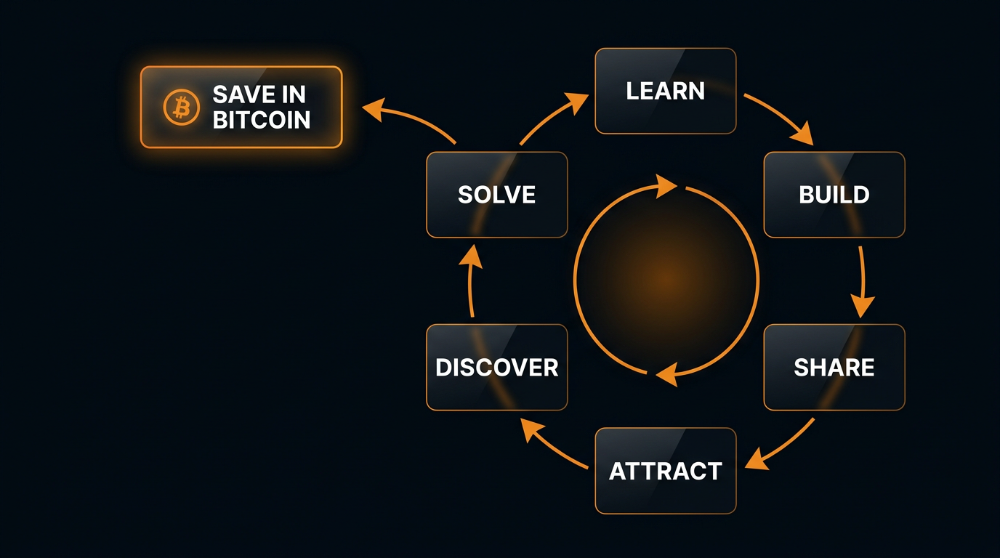
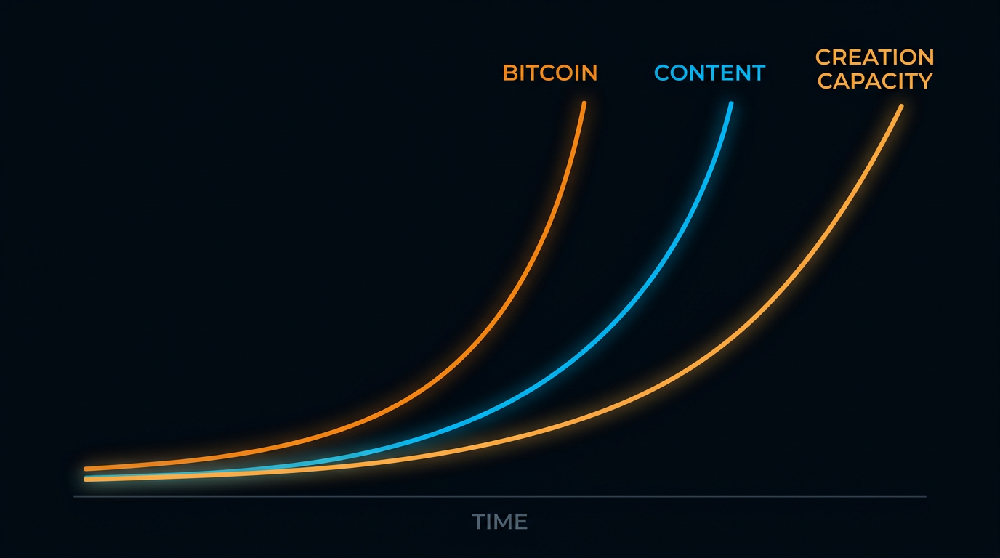

Preamble
This is a stance, not a product.
It names a category of economic actor that did not previously exist, and the conditions under which that actor becomes possible. It draws on three lenses already in circulation — Jeff Booth's insistence that the natural state of the free market is deflation; the Bitcoin Lens school of thought that treats Bitcoin as a thermodynamic reference frame rather than a financial instrument; and Davidson & Rees-Mogg's 1997 prediction that the microprocessor would dissolve the nation-state's monopoly on wealth and produce a new actor they called the Sovereign Individual. The lenses diagnose. One new condition completes what each foresaw: AI collapses the cost of production to energy plus human direction. Bitcoin gives sovereignty over money. AI gives leverage over labor. Together, at the scale of a single human being, they make possible a life that was until very recently unavailable at any price.
The category named here is the synthesis: the Sovereignpreneur is the Sovereign Individual operationalized for the AI era — sovereign individual meets solopreneur, made possible by Bitcoin underneath and AI on top. Davidson and Rees-Mogg saw the actor coming and could not yet name the operating system. This declaration is the operating system.
It is written for the people who already suspect this is true and want it named clearly. Four axioms, one category, one protocol.
I.On Deflation
Axiom I
The natural state of the free market is deflation.
Exponential technology implies exponential abundance. Every year, more humans can produce more value for more people at lower cost. In a healthy system, this appears as falling prices, rising purchasing power, and the quiet expansion of what an ordinary life can contain. In the system we actually inhabit, this appears instead as a collision between arithmetic and policy — a debt-based currency that must print into deflation in order to survive its own logic.
The arithmetic wins. It has already begun winning. The visible effects — inflationary pulses followed by deflationary collapses, supply-chain disorder, jobs departing from industries that have not yet finished disbelieving in AI — are not anomalies. They are the shape of a system compensating for a truth it was built to ignore.
The sovereignpreneur accepts this truth and positions accordingly.

↳ Originally named and argued by Jeff Booth, The Price of Tomorrow (2020), and extended in his interviews and public talks. The framing of "agency or annihilation" is his.
II.On the Reference Frame
Axiom II
Bitcoin is not merely an asset.
It is the first reference frame outside fiat — a place to measure from whose integrity is enforced by thermodynamic constraint rather than institutional trust. Its block-time is an integer-valued temporal coordinate. Its ledger is the first auditable record of irreversible work conducted outside the system whose observers built it. To measure Bitcoin in dollars is to reverse the frame: it collapses a reference back into a unit that requires reference.
The move is to measure from Bitcoin, not in Bitcoin.

This same move, applied to labor, reveals a second frame. Most measurements of AI are denominated in fiat savings — "AI replaced a $60,000 employee." This is the fiat lens on production. The Bitcoin-native lens is different: AI is not cost reduction. It is sovereign production. It is what lets one human, with taste and direction, produce at the scale of a team, priced in energy rather than salary, compounding in capability rather than headcount.
There is a physics beneath this, though not the kind most writers reach for. In the strongest physics-aware literature on the subject, freedom is not the absence of constraint — it is the presence of maximal responsive capacity within a coherent system of constraints. Fiat currency has arbitrary constraints imposed from outside; Bitcoin has intrinsic constraints enforced by thermodynamics. A salaried employee has arbitrary constraints imposed by an employer; an AI-leveraged operator has intrinsic constraints imposed by energy, judgment, and consequence. The reference-frame shift is not from constraint to freedom. It is from arbitrary constraint to coherent constraint. That shift is what the sovereignty stack names.
↳ This reframe borrows directly from The Bitcoin Lens — an independent research project that treats Bitcoin as a thermodynamic object and names its block-time as the first externally observable quantized time coordinate. Philosophical framing via the constrained-disorder principle and Carlo Rovelli's insistence that freedom is the structure of possibility, not lawlessness. See Further Reading.
III.On Production
Axiom III
AI collapses the cost of output to the cost of energy plus human direction.
What once required a team — writing, code, media, research, support, distribution — can now be orchestrated by a single person with clear intent. The bottleneck has moved. It used to sit on capital and labor. It now sits on taste, judgment, and the ability to hold a clear picture of a desired end state while directing a machine toward it. The human who holds the keys, signs the work, and carries the consequences is the anchor the machine cannot replace. The human role has not shrunk. It has elevated.
The sovereignpreneur operates from this shift as a given. They do not sell hours. They do not sell seats. They sell outcomes produced through orchestration, at margins that were mathematically impossible five years ago and will be table stakes five years from now.
Labor, measured honestly, is priced in energy — not in salary.
IV.On Agency
Axiom IV
Agency is not granted. It is claimed.
Every unit of fiat routed through, every third party depended on, every platform whose terms of service change without warning, every employer who decides whether you are "still needed" — each is a small delegation of agency away from the self. Most of these delegations were never consciously made. They were inherited, assumed, unexamined. The sovereignpreneur examines them.
There is a structural reason this can be claimed now in a way it could not be claimed in 1950 or 1980. Davidson and Rees-Mogg argued in 1997 that the returns to coercion were falling — that as wealth dematerialized into information, the leverage of any institution whose business model required holding people in place would decay. Bitcoin proved this for money. AI proves it for production. The mechanism is not moral; it is materialist. The same physics that makes deflation inevitable (Axiom I) makes agency recoverable. Booth's "agency or annihilation" and Davidson's "transition" are the same observation, twenty-three years apart, and both were right. What changes in 2026 is that the tools the prediction required — sovereign money in self-custody, sovereign production from a laptop — are finally in the hands of ordinary people rather than the cognitive elite the 1997 book imagined as the only beneficiaries. The Sovereignpreneur is humanist by construction: the category is open to anyone who claims it, and the end (see On the End) is time and the slow work of being alive, not jurisdictional arbitrage.
Claiming agency is not an act of withdrawal. It is an act of construction. You hold your own keys. You run your own node. You own your own audience — the list, not the follower count. You run your own models where you can, on the hardware in front of you, under the sun falling on your roof. You direct your own production. You choose your own terms. The work is not to opt out of society — the work is to build the portions of your own life that you used to rent.
Frontier compute is a convenience, not a requirement. A laptop and a few panels is already enough to produce at scale. Centralized attention is a channel, not a home — the audience lives where you can reach them without permission.
The default state of a human who refuses to outsource these decisions — and does the interior work that outsourcing used to paper over — is sovereignty.

↳ The "agency or annihilation" framing is Jeff Booth's; the extension to platform and production dependency is the sovereignpreneur's adaptation of it.
The Sovereignpreneur
A new category of economic actor.
- Sovereign over money — Bitcoin held in self-custody, independent of banking permission.
- Sovereign over production — AI-leveraged output, independent of the capital, credentials, and platforms that used to gatekeep it.
- Sovereign over lifestyle — geographic, relational, and temporal freedom, independent of permission entirely.

The stack runs both directions. Each layer reinforces the others. Sound money makes AI leverage worth accumulating. AI leverage makes sound money worth saving. Both together make the human layer — the layer where actual life is lived — recoverable from the systems that have historically consumed it.
On the End
The Telos
Sovereignty is not the end. Sovereignty is the precondition.
The end is time — the hours fiat civilization leases back to you at interest, and a deflationary one returns outright. What you do with those hours is not prescribed here. The pre-industrial human knew what unrented time was for: creation, health, people, thought, the slow work of being alive. A technological civilization has spent a century teaching the species to forget. The sovereignpreneur is someone who remembers, and builds the conditions under which remembering is possible.
The top tier of the stack is human freedom. What each person makes of it is their own.
The Three-Path Protocol



Full operational detail is given in the keynote and workshop.

You already hold your own keys.
The next move is to stop renting your output.
This is a living document.
The axioms are fixed. The language around them sharpens over time. Source, revisions, and contribution guide live on GitHub — open a PR to fix a typo, tighten a paragraph, or propose a Further Reading addition.
github.com/jordanurbs/sovereignpreneur →Attributions & Sources
This declaration does not claim originality for its foundations. It claims the synthesis. Sources and inspirations, with gratitude:
- Jeff Booth — for the core thesis that the natural state of the free market is deflation, and for the framing of agency as the line between surviving and being annihilated in the coming monetary rupture. See The Price of Tomorrow (2020) and his ongoing public work.
- The Bitcoin Lens — an independent research project that treats Bitcoin as a thermodynamic object and names its block-time as the first externally observable quantized time coordinate. Axiom II is a direct tribute to their "remove fiat as the interpretive intermediary" methodology and their declaration format.
- James Dale Davidson & Lord William Rees-Mogg — The Sovereign Individual (1997), for the civilizational backdrop against which this entire project is legible.
- The cypherpunks, Satoshi Nakamoto, and the thousands of silent builders keeping the Bitcoin protocol decentralized and secure. Without them, none of this has a foundation.
- The open-source self-hosting community — BTC Pay Server, Umbrel, Start9, and the infrastructure that makes Axiom IV operable for non-engineers.
Any errors of interpretation are the author's. Where this declaration extends the work of others, it does so in good faith, with the intention of making their ideas more actionable for a specific reader: the individual operator standing at the intersection of Bitcoin and AI, asking what to do now.
Further Reading — On Freedom
This declaration does not try to prove human freedom from physics — a thing physics alone cannot do. It borrows structural vocabulary from the serious literature on freedom, and disavows the loose quantum-spiritual literature often confused with it. Readers who want to verify the lineage:
- James Dale Davidson & Lord William Rees-Mogg, The Sovereign Individual (1997) — the prophetic source of the actor this declaration names. Cited for the prediction (microprocessor dissolves the nation-state's coercive leverage; a new sovereign actor becomes possible) rather than the prescription (cognitive-elite jurisdictional arbitrage). The Sovereignpreneur is humanist by construction; the book's tone is not. Read for the mechanism, not the worldview.
- Jenann Ismael, How Physics Makes Us Free — why physics neither proves nor refutes human agency. Overview.
- Carlo Rovelli, "Free Will, Determinism, Quantum Theory and Statistical Fluctuations: A Physicist's Take" — the serious physicist's rebuttal to both hard determinism and quantum-mystical rescue attempts; the line that freedom is not lawlessness but the structure of possibility is Rovelli's. Edge.org.
- Yaron Ilan et al., on the constrained-disorder principle — freedom as a system property defined by coherent constraint paired with adaptive variability, rather than by the removal of constraint. The physical analog for what this declaration calls the shift from arbitrary constraint to coherent constraint.
- Ian Carter, "Positive and Negative Liberty," Stanford Encyclopedia of Philosophy — the Berlin distinction this declaration folds into Axiom IV. SEP entry.
- Philip Pettit, on republican non-domination — why "they haven't interfered yet" is not freedom. See the broader SEP entry on republicanism.
- Human Freedom Index 2025 (Cato Institute / Fraser Institute) — an operational map of personal and economic freedom worldwide. Report.
- Philip Moriarty, "Quantum mysticism is a mistake" — the critique this declaration is written to stay on the correct side of. IAI News.
Axiom I is Booth. Axiom II is the Bitcoin Lens, grounded philosophically in the constrained-disorder principle and Rovelli's anti-mysticism. Axiom IV's materialist mechanism — falling returns to coercion as wealth dematerializes — is Davidson & Rees-Mogg, paired with Berlin/Pettit on the moral structure of liberty. The Sovereignpreneur category is the synthesis: Davidson's Sovereign Individual operationalized by Bitcoin and AI, accountable to all the sources above.
Revisions
New insights, refinements, and extensions will be logged here, timestamped. This is a living document. The axioms are fixed. The language around them will sharpen over time.
2026-04-24 — Sovereign Individual pass. Promoted Davidson & Rees-Mogg's The Sovereign Individual (1997) from a one-line nod in the keynote thesis to a third structural lens in the declaration itself. Three changes. (1) Preamble restructured: three lenses (Booth, Bitcoin Lens, Davidson & Rees-Mogg) diagnose the world; one new condition (AI) completes what they each foresaw. The parallelism line is now load-bearing — Bitcoin gives sovereignty over money. AI gives leverage over labor. Sovereignty is the stance; leverage is the tactic. The asymmetry is intentional. (2) Etymology made explicit: the Sovereignpreneur is the Sovereign Individual operationalized for the AI era — sovereign individual meets solopreneur. Davidson and Rees-Mogg saw the actor coming and could not yet name the operating system; this declaration is that operating system. (3) Axiom IV grounded materially: a new paragraph names "returns to coercion are falling" as the structural mechanism that makes "agency is claimed" possible now in a way it was not in prior eras. Pairs Booth's "agency or annihilation" with Davidson's 1997 transition prediction — same observation, twenty-three years apart, both right. Distance-marker added: the Sovereignpreneur is humanist by construction, open to anyone who claims it, with time and the slow work of being alive as the telos rather than the cognitive-elite jurisdictional arbitrage the 1997 book imagined. Synthesis pass developed in collaboration with Claude Opus 4.7. Further Reading updated.
2026-04-21 — Constraint pass. Replaced the Bejan constructal-law paragraph in Axiom II with a stronger philosophical move drawn from the broader physics-of-freedom literature: freedom is not the absence of constraint but the presence of maximal responsive capacity within a coherent system of constraints. This is the same move said twice — Bitcoin replaces arbitrary monetary constraint with coherent thermodynamic constraint; AI-leveraged production replaces arbitrary employer constraint with coherent energy/judgment constraint. The reference-frame shift in Axiom II is now doing real philosophical work rather than borrowing an engineering metaphor. Bejan removed from attributions and Further Reading. Carlo Rovelli added as the explicit anti-quantum-mysticism anchor; the constrained-disorder principle added as the systems-level citation.
2026-04-20 — Telos pass. Added a short section between "The Sovereignpreneur" and "The Three-Path Protocol" naming what the stack is for. The axioms tell the reader what to refuse; the protocol tells them what to do; neither, previously, said what it was aimed at. The telos is time — the hours leased back to the self at interest by a fiat civilization, returned by a deflationary one. What each person makes of that time is left open. This closes the gap a philosophy-savvy reader would name first: a document that specifies negative liberty in detail without ever sketching the positive-liberty horizon it presumes.
2026-04-20 — Hardening pass. Three reinforcements. (1) Axiom III: the human anchor is not only taste and judgment — it is the one who holds the keys, signs the work, and carries the consequences. Accountability reinforces taste; it does not replace it. (2) Axiom IV: "own your audience" clarified as the list, not the follower count; centralized attention is a channel, not a home. Added the claim that frontier compute is a convenience, not a requirement — a laptop and a few solar panels is enough to produce at scale. (3) Three-Path Protocol / Own: introduced the Airlock — Bitcoin is the balance sheet; fiat is a disposable API token for the legacy system. Convert only what the month demands.
2026-04-20 — Physics pass. Audited the declaration against the serious freedom-and-physics literature (Ismael, Berlin/Carter, Pettit, and the critiques of quantum mysticism by Moriarty and others). (1) Axiom I: replaced "physics will win" with "the arithmetic wins." The claim being made is economic and exponential, not quantum. Honest about what kind of inevitability this is. (2) Axiom IV: added two cautions — negative liberty is not positive liberty; non-interference is not non-domination. Clearing employers and platforms is the precondition, not the finish line. (3) Added a Further Reading section pointing to primary sources so readers can verify the lineage and distinguish this stance from the quantum-woo adjacent literature it is sometimes mistaken for.